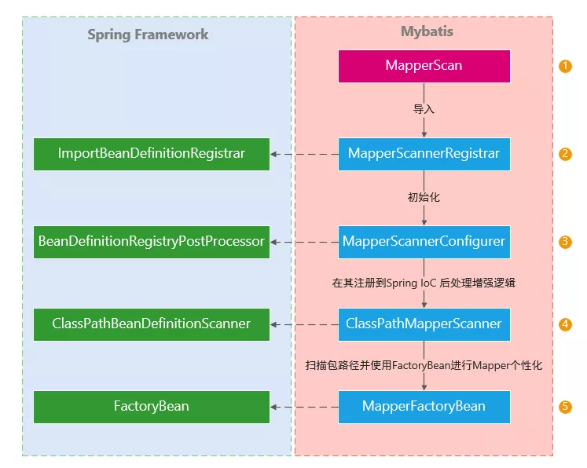
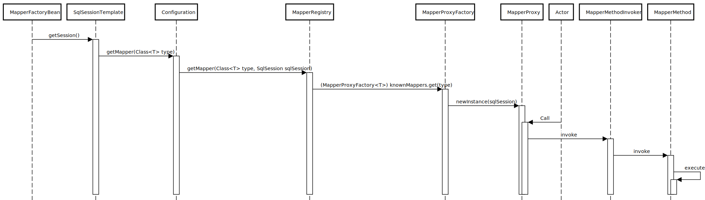

Mybatis 快速入门
概述
MyBatis 是一款优秀的持久层框架，它支持自定义 SQL、存储过程以及高级映射。MyBatis 免除了几乎所有的 JDBC 代码以及设置参数和获取结果集的工作。MyBatis 可以通过简单的 XML 或注解来配置和映射原始类型、接口和 Java POJO（Plain Old Java Objects）为数据库中的记录。
MyBatis 作为一款持久层框架，它趋向于以数据库为中心，因此主要的关注点会落在 SQL 定义、结果映射上，相对来说比较轻量，也更容易入手，对于 SQL 优化也比较容易，但也正是由于偏重 SQL，将会和使用的数据库强关联。
对比 ORM 框架
同时使用面向对象的软件和关系数据库既麻烦又费时。由于对象和关系数据库中的数据表示方式之间存在范式不匹配，因此开发成本要高得多。
相比 ORM 框架，ORM 框架更多的将关注点放在面向对象的域模型和业务逻辑层，ORM 框架一般会遵循 JPA 标准，比如最常见的实现 Hibernate。
ORM 框架的主要目的之一是降低与特定数据库的耦合性，它抽象了数据库系统，因此在不同数据库切换、移植时会更加容易，抽象的代价是与之而来的复杂性的增加，但也提供了更多丰富的功能特性：数据变更追踪、审计、一/二级缓存、并发版本控制、数据懒加载、级联操作，以及丰富的查询方式：SQL、HQL、JPQL、Criteria API、Query DSL 等；
XML or Annotation
在使用 MyBatis 开发应用时，最大一部分工作是在和 Mapper（映射器）打交道，Mapper 中主要又分为两部分：
- sql 语句定义（select、insert、update、delete、sql）
- 结果集映射 resultMap
而这两部分既可以通过 XML 也可以通过注解来定义，同样是为代码运行提供元数据，使用哪种更好呢？
每种方法都有其优点和缺点，通常，由开发人员决定哪种策略更适合他们。由于它们的定义方式，注解在其声明时提供了大量上下文，从而导致更短更简洁的配置。但是，XML 擅长在不触及源代码或重新编译它们的情况下连接组件。一些开发人员更喜欢将配置靠近源，而另一些开发人员则认为注解类不再是 POJO，而且配置变得分散且难以控制。
MyBatis 的 XML 提供了全量的功能，注解受限于灵活性不能覆盖所有方面，比如嵌套结果映射等，但是能基本的满足开发使用。
个人建议：优先考虑使用 XML。
动态 SQL
动态 SQL 定义又分为编译时定义和运行时定义。
编译时动态 SQL 定义
编译时定义通常是使用 XML 或注解提供元数据的方式提前定义好，对于 XML 通常提供以下标签：
if- 条件拼接choose (when, otherwise)- 多条件选择，类似 switchtrim (where, set)- 动态 where 条件适配foreach- 集合遍历
要在注解中使用动态元素，可以通过 script 标签来完成：
1 |
|
运行时动态 SQL 定义
虽然通过 XML 直接注入 SQL 片段参数也能实现运行时动态定义 SQL，但 MyBatis 提供了更加安全且灵活的定义方式：MyBatis Dynamic SQL。
该库通过实现类似于 SQL 的 DSL(domain-specific language) - 领域特定语言来工作，该 DSL 创建一个包含完整 SQL 语句和该语句所需的任何参数的对象。MyBatis 可以将 SQL 语句对象直接用作映射器方法的参数。
该库内置了很多易用的条件方法，结合 Java8 的 Predicate、Supplier 等函数，可以实现复杂的条件拼接。
作为一个 SQL 构建器，它并没有实现所有 SQL 的语法，比如查询的 WITH、HAVING、部分子查询写法等。
对象关系映射
对于普通的查询都能通过映射 POJO 对象或 Map 或基础类型来完成，对于存在对象关系的映射：
一对一
在 XML 中可通过 association 标签加载关联，在注解中使用 result 的 one 属性，加载方式分为两种：
-
嵌套 Select 查询：通过执行另外一个 SQL 映射语句来加载期望的复杂类型。
1
2
3
4
5
6
7
8
9
10
11
12
13
14<resultMap id="blogResult" type="Blog">
<result property="title" column="blog_title"/>
<association property="author" column="author_id" javaType="Author" select="selectAuthor"/>
</resultMap>
<!-- 查询博客 -->
<select id="selectBlog" resultMap="blogResult">
SELECT * FROM BLOG WHERE ID = #{id}
</select>
<!-- 查询博客的作者 -->
<select id="selectAuthor" resultType="Author">
SELECT * FROM AUTHOR WHERE ID = #{id}
</select>在查询完 blog 后，会通过 association 标签中定义的 column 找到结果集中的该字段结果，并使用该字段结果去调用 selectAuthor 中定义的语句，并将结果返回给 Blog 对象中 author 对象。
在注解中通过 result 的 one 属性定义：
1
2
3
4
5
Blog selectBlog(int id); -
嵌套结果映射：使用嵌套的结果映射来处理连接结果的重复子集。
比如对该查询结果进行映射：
1
2
3
4
5
6
7
8
9
10
11
12
13
14
15
16<!-- 查询博客及博客作者 -->
<select id="selectBlogDetails" resultMap="detailedBlogResultMap">
select
B.id as blog_id,
B.title as blog_title,
B.author_id as blog_author_id,
A.id as author_id,
A.username as author_username,
A.password as author_password,
A.email as author_email,
A.bio as author_bio,
A.favourite_section as author_favourite_section
from Blog B
left outer join Author A on B.author_id = A.id
where B.id = #{id}
</select>映射关联查询中的 Blog 对象中的一对一 Author ：
1
2
3
4
5
6
7
8
9
10
11
12
13
14<resultMap id="detailedBlogResultMap" type="Blog">
<constructor>
<idArg column="blog_id" javaType="int"/>
</constructor>
<result property="title" column="blog_title"/>
<association property="author" javaType="Author">
<id property="id" column="author_id"/>
<result property="username" column="author_username"/>
<result property="password" column="author_password"/>
<result property="email" column="author_email"/>
<result property="bio" column="author_bio"/>
<result property="favouriteSection" column="author_favourite_section"/>
</association>
</resultMap>@one 注解 API 不支持嵌套结果映射。这是由于 Java 注解中的限制，不允许循环引用。
对于关联表和主表字段名相同的，必须使用不同别名，否则在返回结果集时会映射出错。
可以使用
columnPrefix指定关联表字段的统一前缀。
一对多
一对多在 XML 中使用 collection 标签，在注解中使用 result 的 many 标签加载关联，同样，我们可以使用嵌套 Select 查询，或基于连接的嵌套结果映射集合：
-
嵌套 Select 查询：
1
2
3
4
5
6
7
8
9
10
11
12
13
14<resultMap id="blogResult" type="Blog">
<collection property="posts" javaType="ArrayList" column="id" ofType="Post"
select="selectPostsForBlog"/>
</resultMap>
<!-- 查询博客 -->
<select id="selectBlog" resultMap="blogResult">
SELECT * FROM BLOG WHERE ID = #{id}
</select>
<!-- 查询博客下的所有文章 -->
<select id="selectPostsForBlog" resultType="Post">
SELECT * FROM POST WHERE BLOG_ID = #{id}
</select>对于使用注解：
1
2
3
4
5
Blog selectBlog(int id);javaType是指集合的类型，一般可以推断出，不用写，ofType是指集合元素的类型。 -
嵌套结果映射：
1
2
3
4
5
6
7
8
9
10
11
12
13
14
15
16
17
18<!-- 查询博客及下面的所有文章 -->
<select id="selectBlogDetails" resultMap="detailedBlogResultMap">
select
B.id as blog_id,
B.title as blog_title,
B.author_id as blog_author_id,
P.id as post_id,
P.blog_id as post_blog_id,
P.author_id as post_author_id,
P.created_on as post_created_on,
P.section as post_section,
P.subject as post_subject,
P.draft as draft,
P.body as post_body,
from Blog B
inner join Post p on B.id = P.blog_id
where B.id = #{id}
</select>可以使用下面的结果映射
1
2
3
4
5
6
7
8
9
10
11<!-- Very Complex Result Map -->
<resultMap id="detailedBlogResultMap" type="Blog">
<constructor>
<idArg column="blog_id" javaType="int"/>
</constructor>
<result property="title" column="blog_title"/>
<collection property="posts" ofType="Post">
<id property="id" column="post_id"/>
<result property="subject" column="post_subject"/>
</collection>
</resultMap>@many 注解 API 不支持嵌套结果映射。这是由于 Java 注解中的限制，不允许循环引用。
使用注意
- XML 符号转义
在 XML 中配置查询 sql 时，对于部分符号需要特殊转义
| 符号 | 转义符号 | 说明 |
|---|---|---|
| < | < |
小于号 |
| <= | <= |
小于等于号 |
| > | > |
大于号 |
| >= | >= |
大于等于号 |
| & | & |
和 |
| ’ | ' |
单引号 |
| " | " |
双引号 |
或者可以将包含特殊符号的语句用 CDATA 包裹起来
1 | <![CDATA[ |
核心处理流程
构建 SqlSessionFactory
每个基于 MyBatis 的应用都是以一个 SqlSessionFactory 的实例为核心的。SqlSessionFactory 的实例可以通过 SqlSessionFactoryBuilder 获得。而 SqlSessionFactoryBuilder 则可以从 XML 配置文件或一个预先配置的 Configuration 实例来构建出 SqlSessionFactory 实例。
在 MyBatis-Spring 中，可使用 SqlSessionFactoryBean来创建 SqlSessionFactory。
从 SqlSessionFactory 中获取 SqlSession
既然有了 SqlSessionFactory，顾名思义，我们可以从中获得 SqlSession 的实例，通过 SqlSessionFactory 的 openSession 方法。
SqlSession 提供了在数据库执行 SQL 命令所需的所有方法。你可以通过 SqlSession 实例来直接执行已映射的 SQL 语句。
使用 Mapper 定义语句和结果映射
映射器主要定义了语句和结果映射。
通过映射器接口，我们可以与 XML 配置形成分离，使用和指定语句的参数和返回值相匹配的接口（比如 BlogMapper.class），使我们的代码不仅更清晰，更加类型安全，还不用担心可能出错的字符串字面值以及强制类型转换。
Mybatis 本身可以通过配置文件定义 Mapper 的位置来帮助程序定位和查找映射器。
在 Mybatis-Spring 中，最简单的方法是委托给 Spring 帮我们扫描注册 Bean，具体在下一节中详细介绍。
扫描到的 Mapper，语句，结果映射（ResultMap）等都会放到 Configuration 类中，在后面的执行中我们将会从这里查找。
执行语句和结果映射
通过 Mapper 的定义我们拿到了要执行的语句，也知道了结果要如何映射。在我们调用 Mapper 的接口时，会反射调用 MapperProxy 代理类，该代理类又委托给 MapperMethod 代理类，最终方法代理类将使用 SqlSession 实例去执行，SqlSession 使用从 Configuration 类拿到的语句，交给 Executor 执行器去执行查询，如果定义了 ResultHandler 则使用该处理器处理结果，否则将使用从 Configuration 中找到的 ResultMap 来处理映射，ResultMap 对不同的字段类型使用 TypeHandlerRegistry 查找已注册的合适的 TypeHandler 进行处理。
Spring Mybatis Mapper 注册机制
Mybatis 结合 Spring 将 Mapper 注册到 Spring IoC 的机制是这样的：

其实里面涉及到 Spring 和 Mybatis 的知识点还是比较多的，但是我们只要梳理出来流程就比较容易理解和掌握。
ImportBeanDefinitionRegistrar
ImportBeanDefinitionRegistrar 是一个非常重要的接口，凡是要把第三方整合到 Spring 的开发者都应该掌握这个接口。这接口用来动态的注册某一些具有相同特征的一批类到 Spring IoC，借助于@Import注解“附着在”自定义的注解上，就像 Mybatis-Spring 的用法一样。
1 |
|
然后将该注解附着到标记有@Configuration或者具有相同功能的配置类上，Spring 会在处理配置类时处理我们的 Import 注解。
MapperScannerRegistrar 实现了该接口，该接口只定义了一个方法：
1 | /** |
其中参数 importingClassMetadata 包含了 @Import 所依附的配置类上的所有注解。这意味着我们可以拿到对应注解的元信息并作为我们动态导入的判断依据，上面就是从 @MapperScan 获取了 Mapper 所在的包以及其它信息。
在拿到 MapperScan 注解的元数据后，我们为 MapperScannerConfigurer 提供了配置信息，该配置类又实现了 BeanDefinitionRegistryPostProcessor ，其继承于 BeanDefinitionRegistry。
BeanDefinitionRegistry 就是用来注册 Spring Bean 的。那么到底是如何注册的呢？这就该下一个主角登场了。
BeanDefinitionRegistryPostProcessor
BeanDefinitionRegistryPostProcessor 是 BeanFactoryPostProcessor 的子接口。
BeanFactoryPostProcessor 的作用是在 Spring Bean 的定义信息已经加载但还没有实例化的时候执行 postProcessBeanFactory() 来处理一些额外的逻辑，比如对 Bean 配置元数据进行操作。也就是说，Spring IoC 容器允许 BeanFactoryPostProcessor 读取配置元数据，并有可能在容器实例化除 BeanFactoryPostProcessor 实例之外的任何 bean之前更改它。
而 BeanDefinitionRegistryPostProcessor 的作用是在 BeanFactoryPostProcessor 增加了一个前置处理，当一个 Bean 实现了该接口后，始化前先执行该接口的 postProcessBeanDefinitionRegistry() 方法，然后再执行其父类的方法 postProcessBeanFactory()。这样就把一个 Spring Bean 的初始化周期更加细化，让我们在各个阶段有定制它的可能。
MapperScannerRegistrar 并没有在该后置处理中注册 Bean，它将注册动作委托给 ClassPathMapperScanner 去扫描注册。
ClassPathBeanDefinitionScanner
从名字上来看这个类就是在类路径下扫描 Bean 定义并将符合条件的批量通过 BeanDefinitionRegistry 注册到 Spring IoC。
它提供了可配置的过滤器来检出需要被注入 Spring IoC 的 Bean，默认的过滤器包括用 Spring 的 @Component、@Repository、 @Service、@Controller 注释的类 。还支持 Java EE 6 的 javax.annotation.ManagedBean 和 JSR-330 的 javax.inject.Named 注解，如果这些注解可用。当然你可以通过 addIncludeFilter 来新增被包含的 Bean，或者 addExcludeFilter 来排除一些 Bean。然后只需要调用其 scan 方法对特定的包进行扫描注入。
Mybatis 的 ClassPathMapperScanner 继承于 Spring 的 ClassPathBeanDefinitionScanner ，它为 Mapper 提供了 Mybatis 需要的参数变量，比如：SqlSessionFactory 以及 封装了 SqlSession 后线程安全的 SqlSessionTemplate，SqlSessionTemplate 还提供与 Spring 事物管理一起工作的能力。
在扫描到特定包下的 Mapper 对象时，会选择用实现 FactoryBean 接口的 MapperFactoryBean 作为该 Mapper 的工厂类，工厂类对其 Mapper 的获取最终委托给 Mybatis 的 Configuration 类来获取，Configuration 内部维护了已找到的 Mapper、结果映射配置等，Configuration 通过使用 MapperProxyFactory 实例化一个该 Mapper 的 MapperProxy 代理类，最终在我们调用 Mapper 接口时，会通过实现了 InvokeHandler 的代理类的 Invoke 去真正执行逻辑，流程如下图：
